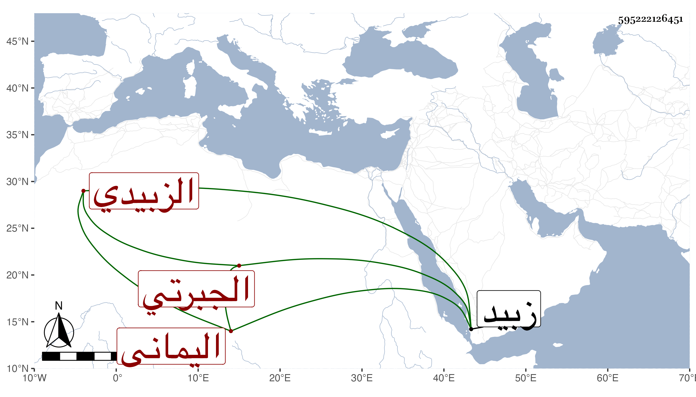

0902Sakhawi.DawLamic.ITO20230111-ara1.EIS1600.595222126451
Biography ID: 595222126451
329
محمد بن إسماعيل بن أبي بكر الجمال بن الشرف الجبرتي الأصل اليماني الزبيدي . خدم عن أبيه وأبوه عن الجمال محمد بن محمد المزجاجي عن والداعية إسماعيل الجبرتي ، ولقيه عبد الله بن عبد الوهاب الكازروني المدني وقال لي أنه شيخ الصوفية الآن بزبيد وأنه لم يتكهل .
